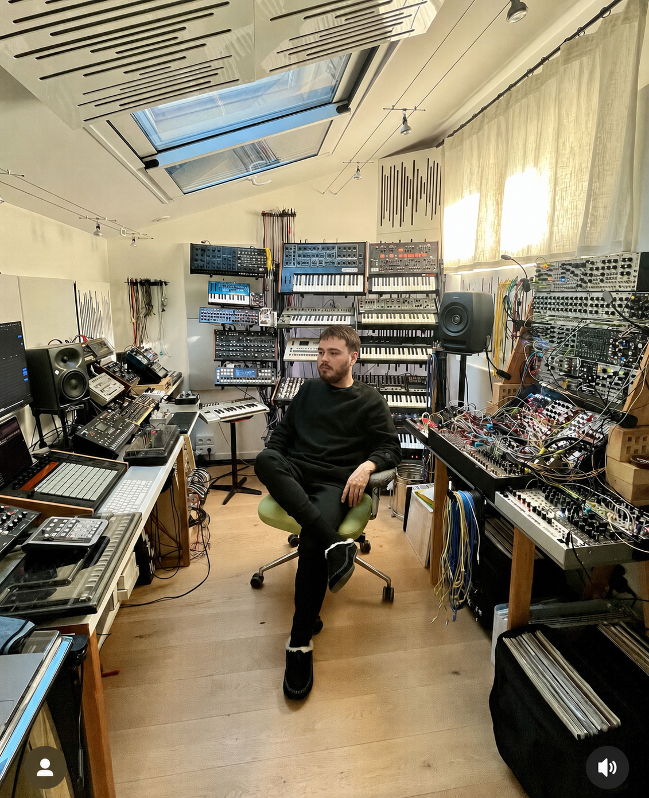

Le monde des synthétiseurs
Une médiathèque personnelle autour des sons électroniques, des machines iconiques et des influences qui façonnent l’imaginaire musical.

À propos de moi
Je m’appelle Lucien Vallée, et je m’intéresse aux synthétiseurs, à leurs sons particuliers et aux atmosphères qu’ils permettent de créer. J’aime découvrir comment un simple son électronique peut donner une identité forte à un morceau. À travers ce rayon, je veux partager des musiques, des artistes, des machines et des influences qui montrent toute la richesse de cet univers sonore.
Pourquoi les synthétiseurs ?
Ma passion, c’est explorer les sons uniques des synthétiseurs et comprendre comment ils façonnent l’ambiance d’un morceau.
Texture sonore
Les synthétiseurs permettent de créer des sons impossibles à produire avec des instruments classiques.
Identité musicale
Une nappe, une basse ou un lead synthétique peut immédiatement donner une couleur à un morceau.
Imaginaire visuel
Les synthés évoquent des mondes futuristes, nocturnes, rétro ou cinématographiques.
Ma médiathèque idéale
Morceaux cultes
Des titres où le synthétiseur devient l’élément central de l’émotion.
Artistes influents
Des artistes qui ont construit une identité sonore grâce aux machines.
Machines iconiques
Des synthétiseurs mythiques qui ont marqué l’histoire de la musique.
Ambiances visuelles
Des pochettes, clips et univers graphiques liés aux sons électroniques.
Bandes originales
Des musiques de films où les synthés créent tension, mystère ou nostalgie.
Expérimentations
Des sons étranges, imparfaits, futuristes ou inattendus.
Mes influences
Mon univers se construit entre des références musicales, visuelles et technologiques. Les synthétiseurs m’intéressent parce qu’ils ne sont pas seulement des instruments : ce sont aussi des machines à créer des atmosphères.
Mon projet cette année
Cette année, je veux créer une médiathèque numérique dédiée aux synthétiseurs, avec des morceaux marquants, des artistes influents, des machines iconiques et des références visuelles ou sonores qui racontent l’histoire de cet instrument.
Sélectionner des morceaux
Identifier les artistes et machines
Créer une identité éditoriale
Publier une médiathèque claire et interactive